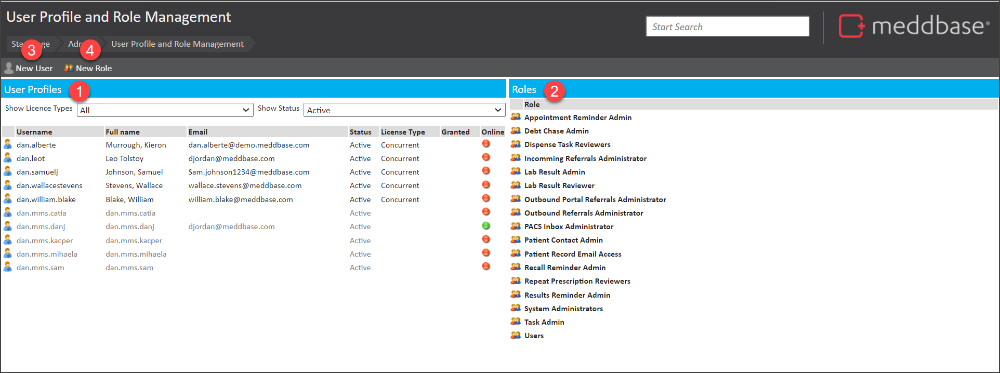
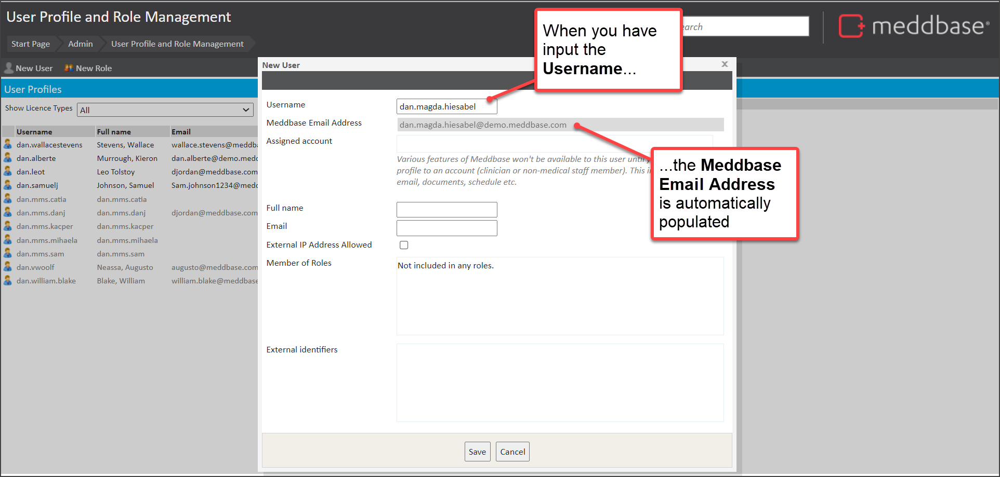
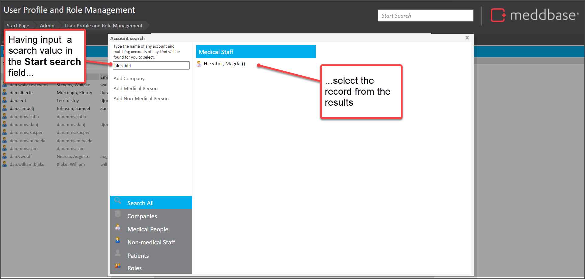
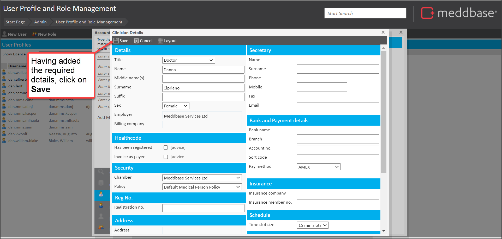
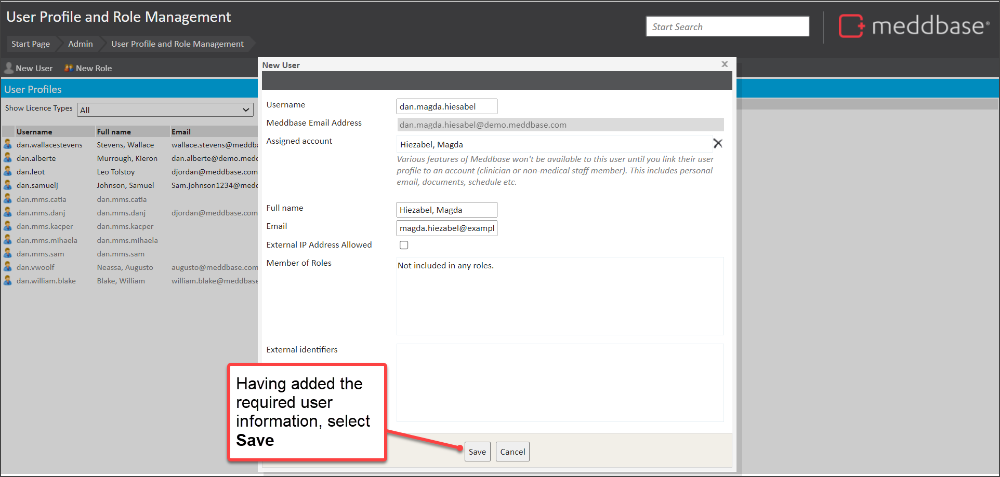

The User management section allows you to create new users. It also allows you to assign licenses to users, allocate users to existing roles and even create new roles.
Creating and managing users effectively is vital for ensuring that the right individuals have appropriate access to Meddbase’s functionalities and that the system runs smoothly across various departments.
In order for a user to be able to log in to Meddbase, they need 3 things:
This article outlines:
To do this:
1. From the Start Page go to the Admin panel
2. Then select User Management
The User Profile and Role Management page is displayed.
In the User Profile and Role Management page, you can see a range of features.

These are explained in the table below.
| Item | Feature | Explanation |
| 1 | User Profiles | This contains a table of all User Profiles that exist for the chamber. Each record displays the following:
|
| 2 | Roles | The list of Role groups that belong to the chamber. Users can be added to existing role groups. New Role groups can also be created. |
| 3 | New User | Enables you to create a new user record. |
| 4 | New Role | Enables you to create a new Role Group. |
To create a new user:




The user record is created. Also, the user is emailed their details.
The table below summarises a few useful hints and tips in relation to creating users.
| Field | Point to note |
| Usernames | When creating users, it is a good idea to use a consistent format for user names. In the above example, we have suggested the format [client code].[firstname].[lastname]. It could also be useful to review existing user names within your chamber and follow the existing format. This can help to avoid confusion or complication. |
| Assigned account | This can be a Clinician or a member of Non-medical staff. |
| External IP Addresses | Where this is ticked, the user can access Meddbase from outside of your local network. Where you need to allow users to access Meddbase outside of your network (e.g. where they are working from home) this option needs to be ticked. You can define which IP addresses you consider to be internal in the application configuration, for more about this please refer to the linked article IP address settings. |
There are further steps that need to be taken to enable a user to access the chamber.
There is a range of built-in Role groups available in Meddbase which are explained in the article "Understanding Role Groups". These Role groups will define the features that the user can access and the actions they can carry out.
You will need to decide the Role groups to which the user should be added.
As a general rule of thumb, we recommend adding users to any groups related to their role in the chamber. But ultimately, the decision is yours.
By default, all new users are added to the Users Role group. When you have made a decision you need to add the user to further role groups as explained in the article "Adding a user to a Role Group".
After adding your user to a Role group, you need to provide them with a license to allow them to access the chamber.
If you do not have enough licences to assign or would like more information on what the different licences to, please refer to the article Licencing Explained.